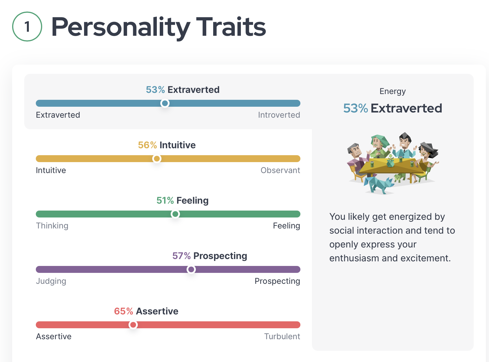

My interests include internet browsing and working on projects with individuals. These activities fit in well with my academic goals because I'm pursuing a computer science degree right now, and working on projects using various languages has given me a head start because some of the languages are used for modules, like Python. My qualities are commitment and determination. Being able to commit to a task has greatly helped me to stay at the top of my classes, and my will to keep trying even when things get difficult also helps in that regard.
One of my favourite quotes from Steve Jobs is:"Stay hungry, stay foolish." The quote above emphasises the need of always pushing forward and remaining curious, especially in the face of adversity. Steve Jobs' vision and unwavering drive for invention make him my hero. He reshaped industry and the way we engage with technology in spite of numerous setbacks. I respect how he overcame obstacles and followed his passion for creating goods that have an impact on millions of people globally. I picked him as my hero because I want to approach my work with the same tenacity and inventiveness.
I recently took the 16Personalities personality test, which revealed that I have the "Campaigner" temperament. This aligns with my vibrant force of enthusiasm, creativity, and idealism. I think the test has some validity, particularly in highlighting how I approach decision-making and learning. However, I believe that while personality tests can provide insight, they shouldn't define us entirely, as everyone has the ability to grow and adapt over time.
